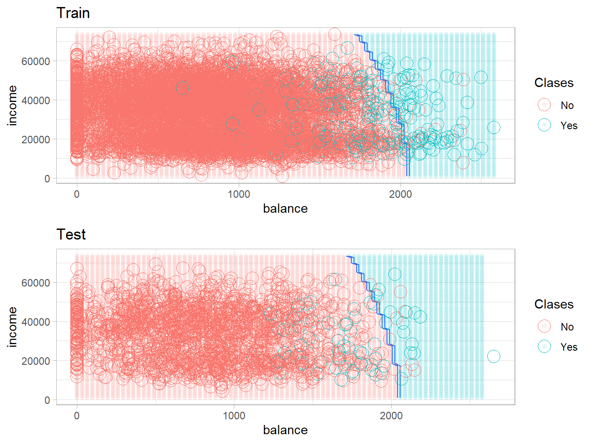

3.3 Análisis Discriminante Regularizado
Opción 1: el paquete caret crea el grid para \((\lambda, \gamma)\):
set.seed(123)
model_rda_def <- train(default ~.,
data = train_df,
method = "rda",
tuneLength = 2,
trControl = fit_control)
model_rda_def## Regularized Discriminant Analysis
##
## 8001 samples
## 2 predictor
## 2 classes: 'No', 'Yes'
##
## No pre-processing
## Resampling: Cross-Validated (10 fold)
## Summary of sample sizes: 7200, 7200, 7201, 7202, 7201, 7202, ...
## Resampling results across tuning parameters:
##
## gamma lambda Accuracy Kappa
## 0 0 0.9730043 0.3787741
## 0 1 0.9733790 0.3710518
## 1 0 0.9666297 0.0000000
## 1 1 0.9666297 0.0000000
##
## Accuracy was used to select the optimal model using the largest value.
## The final values used for the model were gamma = 0 and lambda = 1.## Call:
## rda.default(x = x, grouping = y, gamma = param$gamma, lambda = param$lambda)
##
## Regularization parameters:
## gamma lambda
## 0 1
##
## Prior probabilities of groups:
## No Yes
## 0.96662917 0.03337083
##
## Misclassification rate:
## apparent: 2.662 %# en este caso el ggplot nos da información sobre los
# hiperparametros y su correspondiente Accuracy
ggplot(model_rda_def) + theme_light()
Opción 2: podemos proporcionar un grid predefinido de valores \((\lambda, \gamma)\) en un data.frame que le pasamos a tuneGrid:
# el grid se puede definir tambien "a mano"
mi.grid <- data.frame(lambda = c(0, 0.3, 0.6, 1) ,
gamma = c(0, 0, 0, 0))
set.seed(123)
model_rda_def <- train(default ~.,
data = train_df,
method = "rda",
tuneGrid = mi.grid,
trControl = fit_control)
model_rda_def## Regularized Discriminant Analysis
##
## 8001 samples
## 2 predictor
## 2 classes: 'No', 'Yes'
##
## No pre-processing
## Resampling: Cross-Validated (10 fold)
## Summary of sample sizes: 7200, 7200, 7201, 7202, 7201, 7202, ...
## Resampling results across tuning parameters:
##
## lambda Accuracy Kappa
## 0.0 0.9730043 0.3787741
## 0.3 0.9733790 0.3791078
## 0.6 0.9735039 0.3764691
## 1.0 0.9733790 0.3710518
##
## Tuning parameter 'gamma' was held constant at a value of 0
## Accuracy was used to select the optimal model using the largest value.
## The final values used for the model were gamma = 0 and lambda = 0.6.## Call:
## rda.default(x = x, grouping = y, gamma = param$gamma, lambda = param$lambda)
##
## Regularization parameters:
## gamma lambda
## 0.0 0.6
##
## Prior probabilities of groups:
## No Yes
## 0.96662917 0.03337083
##
## Misclassification rate:
## apparent: 2.675 %# en este caso el ggplot nos da información sobre los
# hiperparametros y su correspondiente Accuracy
ggplot(model_rda_def) + theme_light()
Los resultados indican que los hiperparámetros óptimos en este caso corresponden a \((\lambda, \gamma) = (0,0)\). ¡Este es el caso del algoritmo LDA! Esto que hemos hecho es comparar diferentes modelos (porque han sido ajustados con diferentes hiperparámetros) resultantes del mismo algoritmo. Veamos las predicciones para la muestra test, la tasa de error correspondiente y la frontera de decisión.
# hagamos las predicciones del conjunto de prueba
prediction_rda_def <- predict(model_rda_def, newdata = test_df)
confusionMatrix(prediction_rda_def, reference = test_df$default)## Confusion Matrix and Statistics
##
## Reference
## Prediction No Yes
## No 1926 52
## Yes 7 14
##
## Accuracy : 0.9705
## 95% CI : (0.9621, 0.9775)
## No Information Rate : 0.967
## P-Value [Acc > NIR] : 0.2098
##
## Kappa : 0.3109
##
## Mcnemar's Test P-Value : 1.014e-08
##
## Sensitivity : 0.9964
## Specificity : 0.2121
## Pos Pred Value : 0.9737
## Neg Pred Value : 0.6667
## Prevalence : 0.9670
## Detection Rate : 0.9635
## Detection Prevalence : 0.9895
## Balanced Accuracy : 0.6042
##
## 'Positive' Class : No
## # extraemos el Accuracy o Precisión
confusionMatrix(prediction_rda_def, reference = test_df$default)$overall[1]## Accuracy
## 0.9704852# la tasa de error
tasa.error.rda <- 1-confusionMatrix(prediction_rda_def, reference = test_df$default)$overall[1]
names(tasa.error.rda) <- "Error RDA"
tasa.error.rda## Error RDA
## 0.02951476